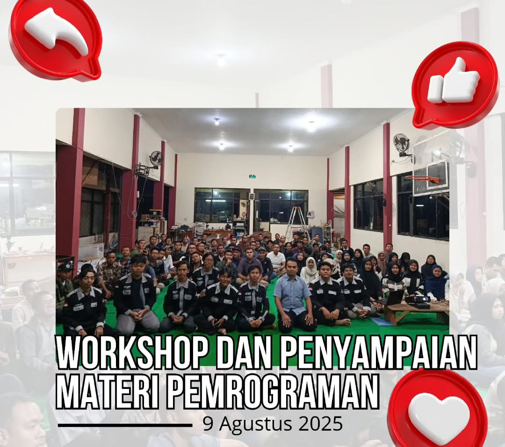
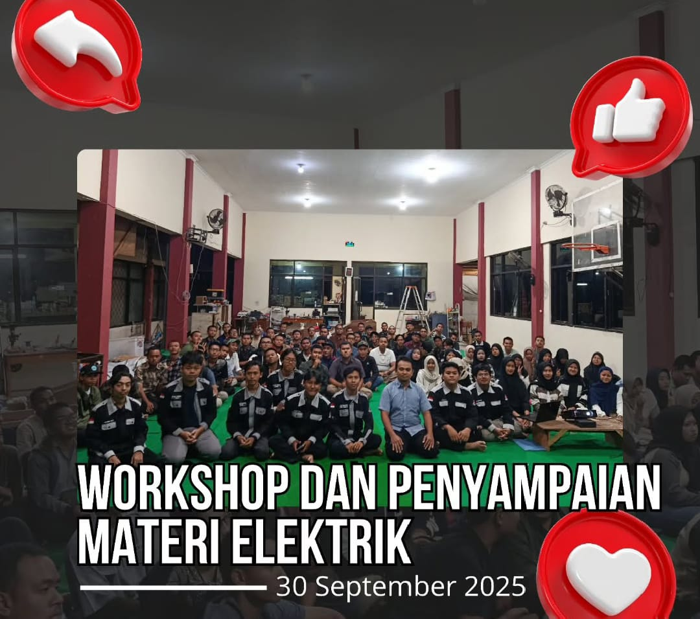

Pada tanggal 19 September 2025, Rapat membahas detail teknis, konsep acara, serta pembagian tugas biar pelaksanaan DIKLAT berjalan dengan lancar.

Pada tanggal 9 Agustus 2025 kegiatan Workshop dan penyampaian materi pemrograman resmi telah berakhir.

Pada tanggal 30 September 2025 UKM Robotika Politeknik Negeri Jember melaksanakan rangkaian kegiatan mulai dari rapat persiapan.